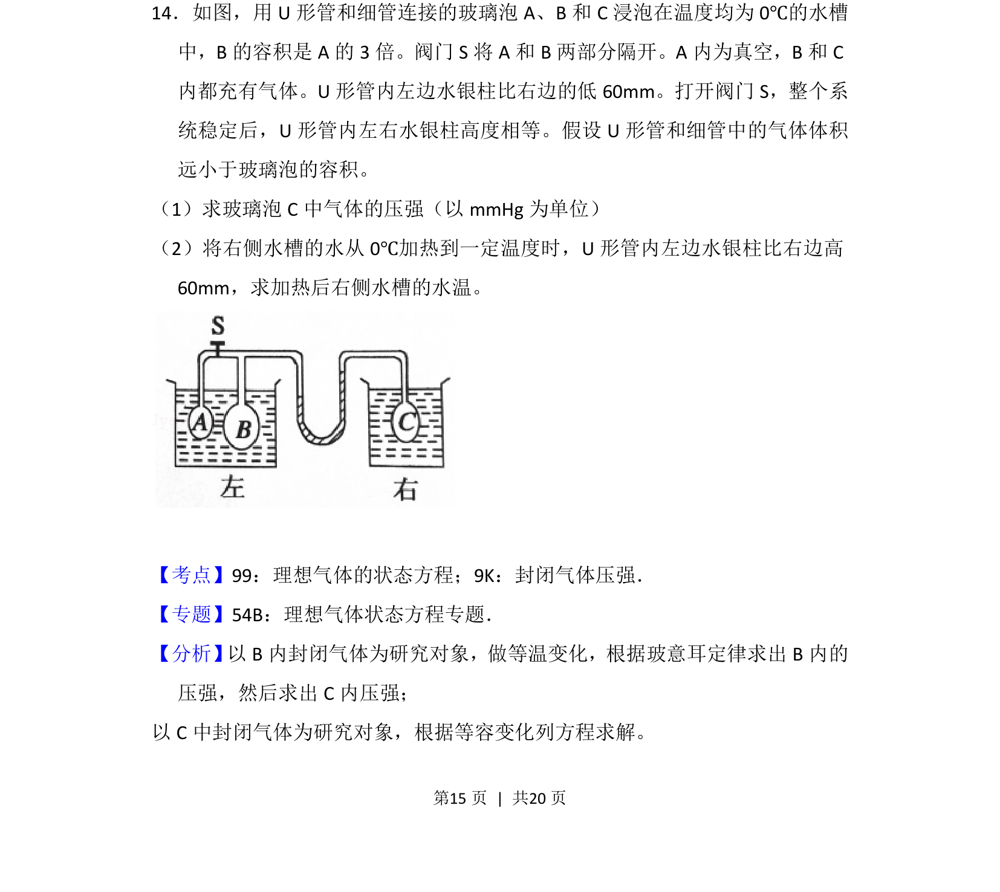
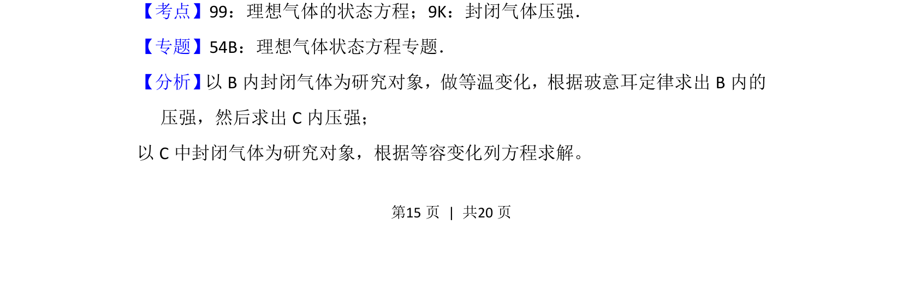
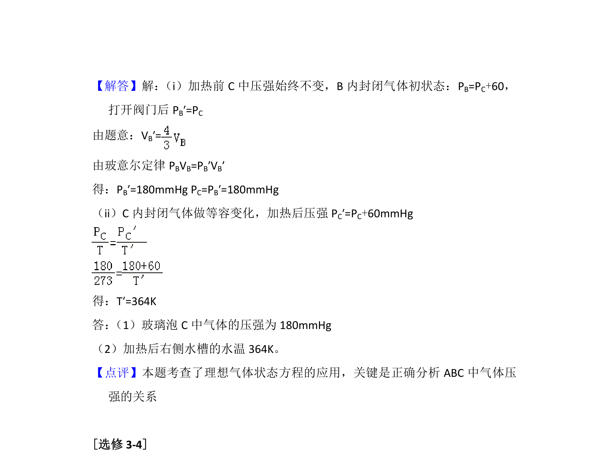

考点：理想气体状态方程 封闭气体压强 等温变化 等容变化

以B和C中气体为对象，结合等温变化与等容变化求解压强和温度


📄 原 PDF 第 15 页：
素材/真题/吉林/2008-2024·（吉林）物理高考真题/2012年高考物理试卷（新课标）（解析卷）.pdf
14．如图，用U形管和细管连接的玻璃泡A、B和C浸泡在温度均为0℃的水槽 中，B的容积是A的3倍。阀门S将A和B两部分隔开。A内为真空，B和C 内都充有气体。U形管内左边水银柱比右边的低60mm。打开阀门S，整个系 统稳定后，U形管内左右水银柱高度相等。假设U形管和细管中的气体体积 远小于玻璃泡的容积。 （1）求玻璃泡C中气体的压强（以mmHg为单位） （2）将右侧水槽的水从0℃加热到一定温度时，U形管内左边水银柱比右边高 60mm，求加热后右侧水槽的水温。
【考点】99：理想气体的状态方程；9K：封闭气体压强．菁优网版权所有 【专题】54B：理想气体状态方程专题． 【分析】 以B内封闭气体为研究对象，做等温变化，根据玻意耳定律求出B内的 压强，然后求出C内压强； 以C中封闭气体为研究对象，根据等容变化列方程求解。